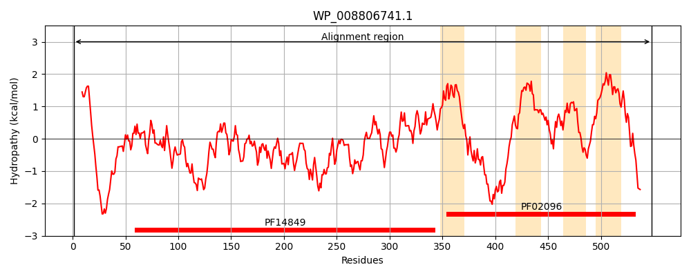
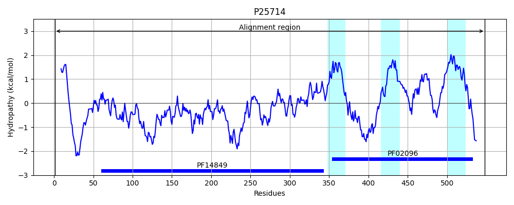
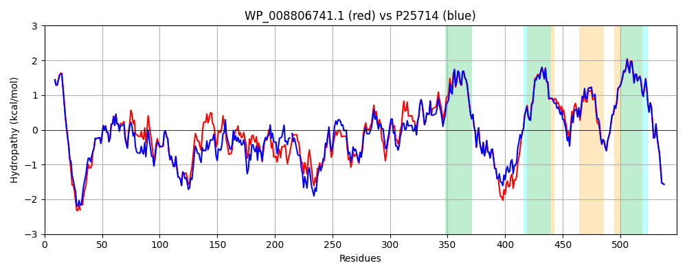

Hit Accession: P25714
Hit TCID: 2.A.9.3.1
Hit Description: gnl|BL_ORD_ID|9561 gnl|TC-DB|P25714|2.A.9.3.1 60 KDA INNER-MEMBRANE PROTEIN - Escherichia coli.
Mach Len: 549
e:0.000000
Query TMS Count : 4
Hit TMS Count: 3
TMS-Overlap Score: 3.300000
Predicted Substrates:CHEBI:8526;protein polypeptide chain
BLAST Alignment:
Score: 2512 , Bit scores: 972 bits, E-value: 0.0e+00, Alignment length: 549, Percentage identity: 86
Query: 1 MDSQRNLLIIALLFVSFMIWQAWEQDKNPQPQ-QQTTQTTTTAAGSAADQGVPASGQGKLITVKTDVLELTINTNGGDIEQALLLAYPKTLKSTEPFQLLETTPQFVYQAQSGLTGRDGPDNPANGPRPLYSVDKEAFVLADGQDEIVIPLTYTDKAGNVFTKTFTLKRGGYAVNVGYSVQNASEKPLEVSTFGQLKQTAALPTSRDTQTGGLSTMHTFRGAAFSTSDTKYEKYKFDTILDNENLNVSTKNGWVAMLQQYFTTAWVPQNNGTNNFYTANLGNGIVAIGYKSQPVLVQPGQTDKLQSVLWVGPAIQDKMAAVAPHLDLTVDYGWLWFISQPLFKLLKFIHSFLGNWGFSIIVITFIVRGIMYPLTKAQYTSMAKMRMLQPKIQAMRERLGDDKQRQSQEMMALYKAEKVNPLGGCFPLIIQMPIFLALYYMLSASVELRHAPFILWIHDLSAQDPYYILPIIMGATMFFIQKMSPTTVTDPMQQKIMTFMPVIFTVFFLWFPSGLVVYYIVSNLVTIIQQQLIYRGLEKRGLHSREKKKS 548
MDSQRNLL+IALLFVSFMIWQAWEQDKNPQPQ QQTTQTTTTAAGSAADQGVPASGQGKLI+VKTDVL+LTINT GGD+EQALL AYPK L ST+PFQLLET+PQF+YQAQSGLTGRDGPDNPANGPRPLY+V+K+A+VLA+GQ+E+ +P+TYTD AGN FTKTF LKRG YAVNV Y+VQNA EKPLE+S+FGQLKQ+ LP DT + + +HTFRGAA+ST D KYEKYKFDTI DNENLN+S+K GWVAMLQQYF TAW+P N+GTNNFYTANLGNGI AIGYKSQPVLVQPGQT + S LWVGP IQDKMAAVAPHLDLTVDYGWLWFISQPLFKLLK+IHSF+GNWGFSII+ITFIVRGIMYPLTKAQYTSMAKMRMLQPKIQAMRERLGDDKQR SQEMMALYKAEKVNPLGGCFPL+IQMPIFLALYYML SVELR APF LWIHDLSAQDPYYILPI+MG TMFFIQKMSPTTVTDPMQQKIMTFMPVIFTVFFLWFPSGLV+YYIVSNLVTIIQQQLIYRGLEKRGLHSREKKKS
Sbjct: 1 MDSQRNLLVIALLFVSFMIWQAWEQDKNPQPQAQQTTQTTTTAAGSAADQGVPASGQGKLISVKTDVLDLTINTRGGDVEQALLPAYPKELNSTQPFQLLETSPQFIYQAQSGLTGRDGPDNPANGPRPLYNVEKDAYVLAEGQNELQVPMTYTDAAGNTFTKTFVLKRGDYAVNVNYNVQNAGEKPLEISSFGQLKQSITLPPHLDTGSSNFA-LHTFRGAAYSTPDEKYEKYKFDTIADNENLNISSKGGWVAMLQQYFATAWIPHNDGTNNFYTANLGNGIAAIGYKSQPVLVQPGQTGAMNSTLWVGPEIQDKMAAVAPHLDLTVDYGWLWFISQPLFKLLKWIHSFVGNWGFSIIIITFIVRGIMYPLTKAQYTSMAKMRMLQPKIQAMRERLGDDKQRISQEMMALYKAEKVNPLGGCFPLLIQMPIFLALYYMLMGSVELRQAPFALWIHDLSAQDPYYILPILMGVTMFFIQKMSPTTVTDPMQQKIMTFMPVIFTVFFLWFPSGLVLYYIVSNLVTIIQQQLIYRGLEKRGLHSREKKKS 548 | Protein Hydropathy Plots: |
|---|
|  |  |
Pairwise Alignment-Hydropathy Plot:
|
|---|
|  |